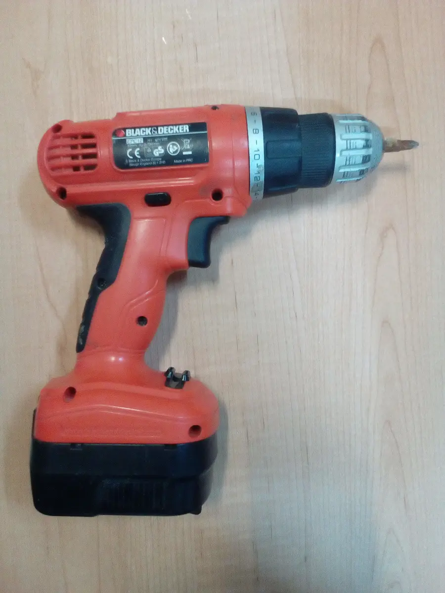

木材や金属への下穴、家具のねじ締め、コンクリートへの穴あけでは必要な工具が変わります。用途に合う機種とメーカー指定の先端工具を選びましょう。
端材で、下穴からねじ締めまで一度試す
ここで練習するのは、由来の分かる未塗装の木材同士を留める作業です。端材2枚、使う予定の木ねじ、木材用ビット、適合するドライバービット、クランプ、保護眼鏡を用意します。
- 裏側まで見る
作業台に捨て板を敷き、端材を重ねて動かないようクランプします。ねじの長さを重ねた材の厚みに当て、裏側への突き出しを先に確認します。
- 下穴を試す
充電式は電池を外して、ねじメーカーの指定と木材に合う径のビットを取り付けます。位置を鉛筆で印して穴あけモードで垂直に構え、回転部に手や手袋、袖を近づけず試します。
- 低いトルクで締める
停止し、電池を外してねじ頭に合うビットに交換。締め付けの強さを調整するクラッチを弱めから始め、ねじ頭が浮くときだけ少しずつ上げます。
- 試し材の裏も確かめる
ねじ頭の沈み具合、木口の割れ、裏への突き出しを確認して設定を記録します。同じ板・ねじで同じ結果が得られてから本番に移ります。
仕上がりの確認と、つまずいたときの直し方
- 仕上がり
- 2枚が密着し、ねじ頭が材料をつぶさず、割れや鋭い突出がないこと。端からの距離も本番と同じ条件で確認します。
- ビットが空回りしたら
- 押し続けずに止め、ねじ頭に入る先端形状とサイズを見直します。配線や配管の位置が分からない壁は練習場所にしません。
4種類の工具を比較
| 種類 | 得意な作業 | 確認点 |
|---|---|---|
| ドリルドライバー | 木材等の穴あけ・ねじ締め | クラッチ、回転速度、チャック径 |
| インパクトドライバー | ねじ締めや締結 | 打撃音、ビット適合、材料の割れ |
| 振動ドリル | 対応する石材・組積材等への穴あけ | 材質・刃径・機種仕様 |
| ハンマードリル | 対応するコンクリートへの削孔 | 打撃・粉じん・配筋・埋設物 |
購入時に見る5項目
購入画面で必ず確認したい仕様
| 項目 | 確認する理由 |
|---|---|
| 用途・材料 | 木材、鉄、組積材など適用対象が異なる |
| 穴あけ能力 | メーカー指定の最大径を超えない |
| 回転数・クラッチ | ねじ締めの調整や材料に合う加工がしやすいか |
| 電源・電池 | 作業場所、充電器、予備電池との互換性 |
| 重量と持ち手 | 上向き作業や長時間使用の負担 |
失敗しやすい組み合わせ
- インパクトドライバーで繊細な家具のねじを強く締め、ねじ山や木材を傷める。
- 用途に合わないビットを使い、穴が広がる・滑る・刃が傷む。
- コンクリートへの穴あけで対象材料と機種の性能を確認せず、作業を続ける。
- 既設壁の裏の電線・配管を確認しないまま貫通させようとする。
回転工具の取扱いでは保護具・固定具・説明書の指示を守り、部材の固定が不十分な状態や片手保持で無理な穴あけをしないでください。
電動工具の事故例と安全上の注意は、製品評価技術基盤機構（NITE）の注意喚起も確認してください。説明書に指定された保護具を使い、用途外の刃や無理な横方向の力を避けます。
最初の1台の考え方
家具や一般木工の比率が高いなら、クラッチ付きのドリルドライバーを基準に選び、作業が増えてから専用機を加える考え方が合理的です。コンクリート躯体や大きな貫通孔は、家庭向け工具の延長として扱わず専門業者へ相談します。
用途別・最初に比較する工具
- 家具の組立て・小さな木工作業：クラッチ付きドリルドライバーから検討。ねじ山を傷めにくい設定が重要です。
- 長い木ねじを多く締める：インパクトドライバーも候補。ただし動作音と材割れに注意。
- コンクリートや組積材への穴あけ：対応材と径を満たす専用機が必要。建物躯体は配筋や設備埋設を確認し、DIY判断を避けます。
機種の対応表記はメーカーごとに異なります。商品名だけで選ばず、取扱説明書の適用材料・穴径を確認してください。
「コンクリートにも使える」は要確認
穴あけ能力の表示には対象材料・径・刃先の条件があります。コンクリートの内部には鉄筋・配線・配管がある場合があり、DIYで安易に構造物へ穴をあけることは避けてください。打撃や切削では呼吸器に有害な粉じんが出る可能性があるため、適切な集じん・湿式対策を検討します。米国NIOSHの安全対策資料 ↗
最初の1台は高価なものが正解とは限らない
家具や木工作業が中心なら小型のドリルドライバーでも十分な場合があります。大きな穴や特殊素材が一度きりなら、専用機のレンタルや専門施工を含めて検討すると合理的です。
この作業に使う道具・材料
広告 Amazonの商品紹介リンクを含みます。
- 木工用ドリルビット
木ねじが指定する下穴径と、手元のドリルのチャックに合う軸形状で選びます。
Amazon.co.jpで木工用ドリルビットを探す - 木材用クランプ
板と作業台を合わせた厚みが挟めるか確認。加工する位置に金具が来ないものを選びます。
Amazon.co.jpで木材用クランプを探す